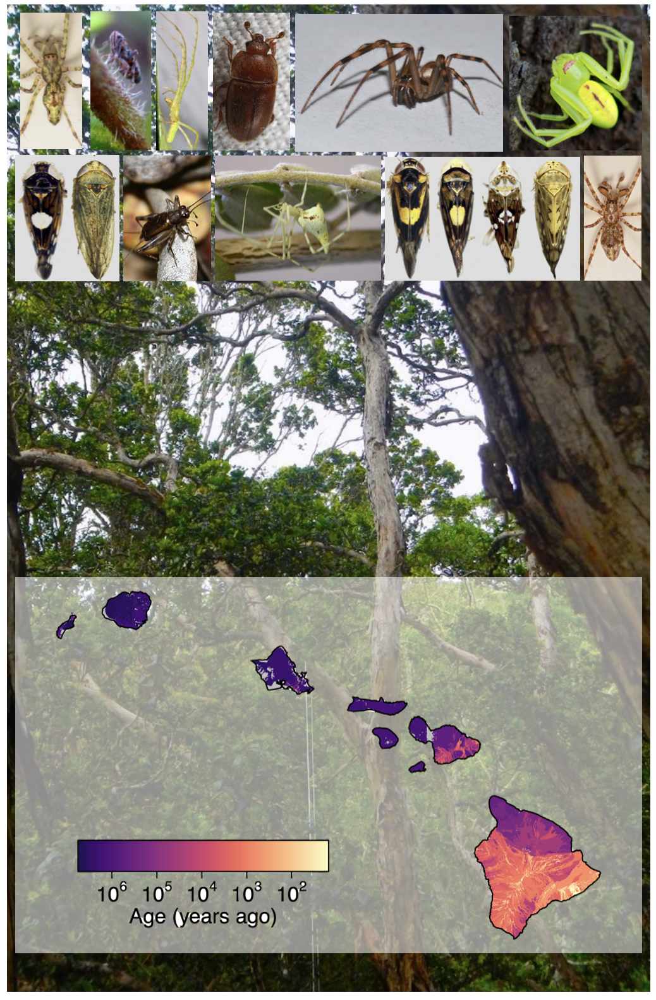
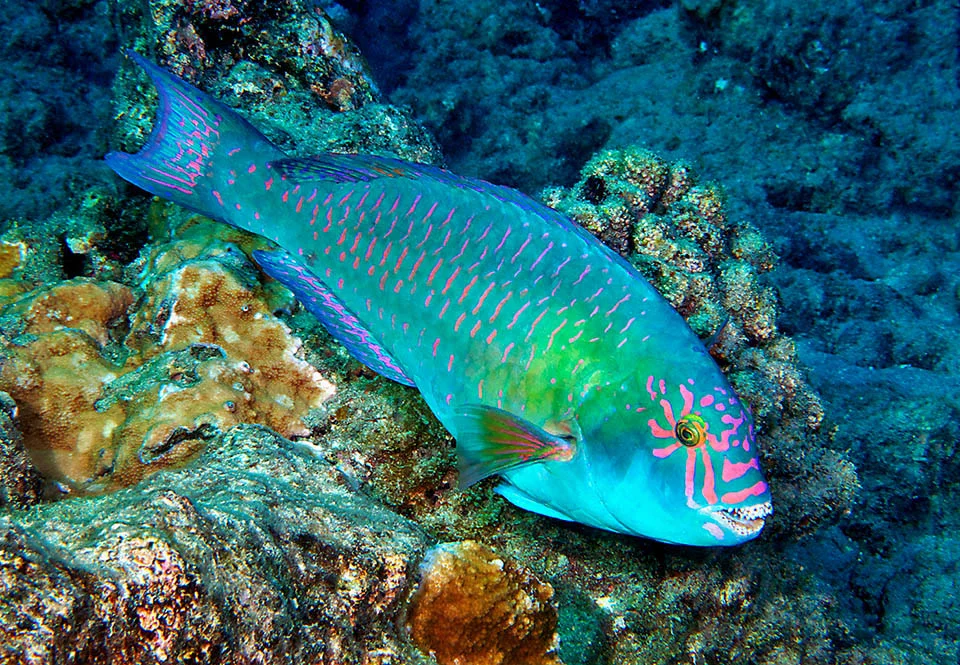
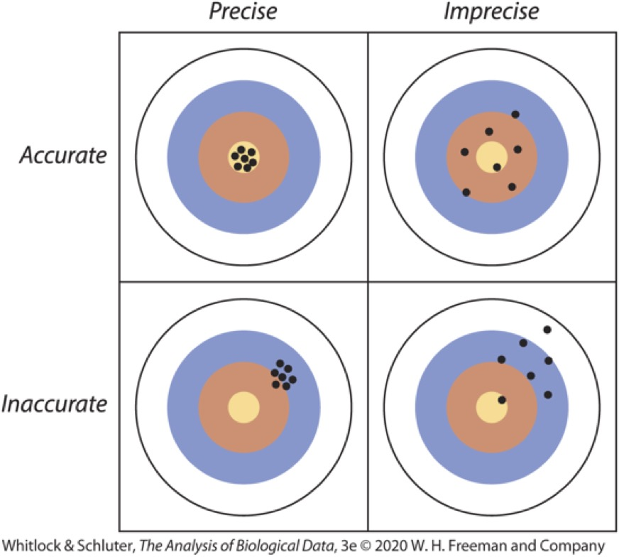
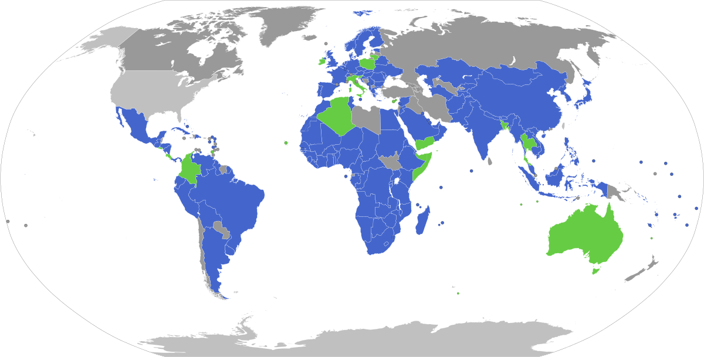
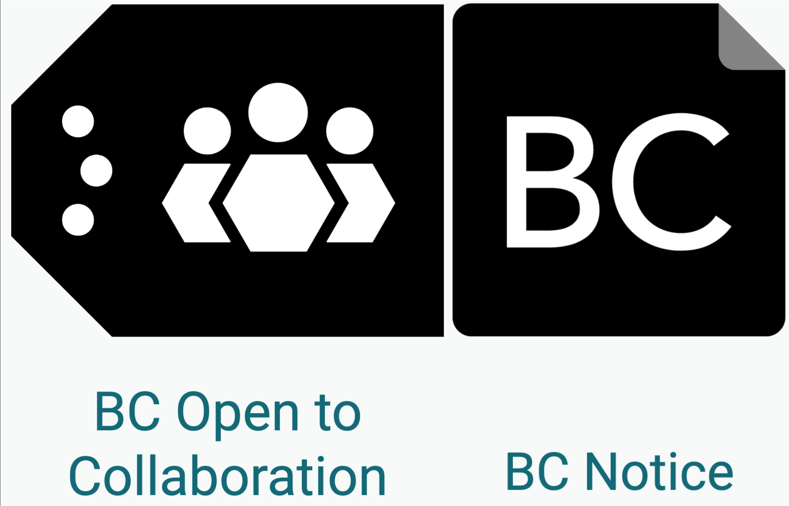

| Parameter type | Biological example |
|---|---|
| average | the average mass of a certain bird species |
| proportion | the proportion of fertile seeds in a fruit |
| variation | the variance in leaf area within a tree |
| relationship | the relationship between latitude and species diversity |
BIOL 220 Introduction
About me
Andy Rominger
he/him, settler/haole

Father, husband
Living and working on stolen ʻāina
Assistant Professor SoLS
Started August 2023
Born and raised in New Mexico
I studied biodiversity in Hawaiʻi during my PhD, left for a few years, back now working on biodiversity and Indigenous data sovereignty
Setting our intentions
ʻAʻa i ka hula, waiho ka hilahila i ka hale
Course objectives
Students will be able to:
- apply statistical knowledge to analyze data and answer biological questions
- communicate and report data visually, orally, and in writing
- apply their knowledge to areas of personal interest such as conservation, sustainability, and health
- identify racist and colonial legacies in biostatistics and ways to positively intervene to stop the perpetuation of those legacies
What is statistics?
What is statistics?
Statistics is the study of methods to describe, measure, and test hypotheses about nature from samples. Statistics gives us tools to describe the uncertainty of measurements and the scientific insights we seek to gain from those measurements.
What is statistics?
Comes down to one question:
Sure?
Goals of statistics
- Estimation
- Hypothesis testing
Biology is messy
Three sources of variation:
- Measurement error
- Random variation
- Complexity
Adapted from www.statstree.org
Biology is messy
Measurement Error
- No measurement device is perfect
- More precise tools are better
- e.g. digital stopwatch versus second-hand on an analog clock
Random variation and error
- We can’t control everything, there’s always some random noise
- We can’t sample everything
- e.g. random temperature fluctuates affect biological processes, finite sample sizes means there’s variation between studies
Biology is messy
Complexity
- We can’t measure unknown processes
- Many environmental, genetic, and other factors affect biology
- e.g. a person’s environment, genetics could affect drug efficacy
What are the sources of variation?
Species richness across the Hawaiian islands is highly variable, how could the sources of variation contribute to variability in species richness: measurement error, random variation, or complexity?

What are the sources of variation?
Species richness across the Hawaiian islands is highly variable, how could the sources of variation contribute to variability in species richness: measurement error, random variation, or complexity?
Answer
- Measurement error (e.g. taxonomic misidentification) is likely small to medium
- Random variation is likely large, (e.g. failing to detect everything)
- Complexity is huge: How species evolve into new forms and interact to form ecosystems is immensely complex
Syllabus
On Google Classroom
Break!
Logistics
- In lab you will be registering for a Koa server account (make sure to do this!)
- Nothing else due this week :)
Learning goals
- Know why and how biologists use statistics
- Explain variables in your data
- Randomly sample a population
1. Know why and how biologists use statistics
Learning objectives:
- Define statistics as the measurement of uncertainty and pursuit of insights in light of uncertainty
- Describe sources of uncertainty
- Describe uncertainty in terms of probability and distributions
- Describe the goals of statistics as parameter estimation and hypothesis testing
- Formulate parameters to estimate and statistical hypotheses to test
- Distinguish between a population and a sample
- Distinguish between a parameter and an estimate
What is statistics?
Statistics is the study of methods to describe, measure, and test hypotheses about nature from samples. Statistics gives us tools to quantify the uncertainty of measurements and the scientific insights we seek to gain from those measurements.
Goals of statistics
- Estimation
- Hypothesis testing
Estimation
Estimation is the process of inferring an unknown quantity of a population using sample data
Population: all individual units in a collective (e.g. trees in a forest, cells in a body, genes in a genome, etc.)
Sample: a subset of the population
Parameter vs. Estimate
A parameter is a quantity describing a population, whereas an estimate or a statistic is a related quantity calculated from a sample
Parameter: the “Truth” about a population
Estimate (aka Statistic): what we calculate from a sample that represents our best guess of the parameter value
Parameters
Activity: Body sizes of uhu
Look around and find the uhu, measure them (to nearest mm), record the data in google classroom

Distinguishing Samples and Populations
In the uhu body size activity
- What could the population be?
- What could represent a sample?
Distinguishing Estimates and Parameters
In the uhu body size activity
- What could be a useful parameter to describe some aspect of the population?
- What is the estimate of that parameter?
Sources of variation
Measurement error
- No measurement device is perfect
Random variation and sampling error
- We can’t control everything, there’s always some noise
Complexity
- We can’t measure everything
- Many environmental, genetic, and other factors affect biology
Hypothesis testing
A scientific hypothesis is a proposition about how the world works
A statistical hypothesis is a specific claim regarding a population parameter.
A statistical hypothesis is related to but generally more specific than a scientific hypothesis
Comparing scientific and statistical hypotheses
Example: Uhu body sizes
Scientific hypotheses are propositions about how the world works
Uhu have gotten smaller in waters around Hawaiʻi due to colonizer (mis)management and ecosystem degradation.
Statistical hypotheses are related, but specific about population parameters
The mean length of the contemporary uhu population is smaller than the historic baseline mean of 550 mm, i.e., \((\mu_\text{now} - \mu_\text{past}) < 0\)
2. Explain variables in your data
Learning goals:
- Define variable
- Distinguish categorical, numerical, and ordinal variables
- Distinguish explanatory and response variables
What is a variable?
Variables are characteristics that could differ among individuals or other sampling units
What is a variable?
Categorical data are qualitative characteristics of individuals that do not have magnitude on a numerical scale
Numerical data are quantitative measurements that have magnitude on a numerical scale
Ordinal data are qualitative measurements, but ordered
Explanatory vs. Response variables
Variables can be either explanatory or response variables
Explanatory variables are hypothesized to cause, directly or indirectly, a change in a response variable
Explanatory vs. Response variables
Typical notation:
| Symbol | Variable |
|---|---|
| \(Y\) | Response |
| \(X\) | Explanatory (e.g. \(Y = \beta_X X\)) |
| \(X_1, X_2\) | Multiple explanatory (e.g. \(Y = \beta_1 X_1 + \beta_2 X_2\)) |
Just because a statistical model says \(X\) “causes” \(Y\), it doesn’t necessarily mean it’s true
3. Randomly sample a population
Learning goals:
- Know that a good sample is precise and unbiased
- Distinguish the precision and bias of a sample
- Know that a random sample involves equal chance and independence
- Identify sources of bias in a nonrandom sample
Why sample?
We don’t have time, budget, ability to measure every unit in a population
Random and independent samples
Recall the uhu body sizes activity
- If we treat all the “uhu” scattered around the classroom as the population and the data collected by each of the 5 sections as 5 samples, are the samples random?
- Are the samples independent?
- What types of processes or mistakes could lead to non-random and/or non-independent samples?
Why do we care?
Whether or not samples are random and independent impacts our estimates
That happens due to:
- Inaccurate assessment of uncertainty: non-random and non-independent samples artificially decrease uncertainty
- Change in precision
- Change in bias
Why do we care? Precision and bias

Obtaining good samples
- Decreasing variance increases precision
- Reduced measurement error
- Large samples increase precision
- Reduced sampling error
- But very precise measurement and large samples can still be biased!
- In fact, large sample size reinforces bias
- Random sampling leads to unbiased estimates
Random samples
A sample is random if two criteria are met:
- Every unit in the population has an equal chance of being sampled
- The probability that one unit is sampled is independent of another unit being sampled
Random samples
Suppose you are running a clinical study to document the effect of noni on arthritis care. Your treatments are YES noni and NO noni. You allow participants to choose their treatment and to switch between treatments such that some of the data points in the YES noni and NO noni treatments come from the same people

- Are these samples random and independent? Why or why not?
- If not, what could be the statistical problems you encounter?
- If not, how would you fix the study design?
Indigenous knowledge
Noni is a kupuna crop. The ʻike of its uses come from inter-generational kilo by Kānaka ʻŌiwi.
- Who gets to benefit from production of noni as commodity?
- Who gets to decide to commodify/how to commodify noni to begin with?
Indigenous knowledge
Noni is a kupuna crop. The ʻike of its uses come from inter-generational kilo by Kānaka ʻŌiwi.
- Who gets to benefit from production of noni as commodity?
- Who gets to decide to commodify/how to commodify noni to begin with?
Indigenous Data Sovereignty

